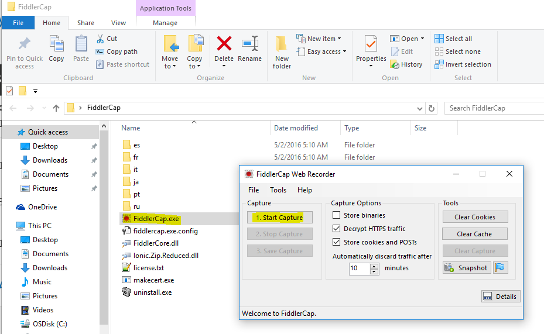

This comes handy when you wanted to capture fiddler logs from a user machine where the issue occur and do not have fiddler installed. You need to install the fiddler if your motive is to just collect the logs and move on, then solution#2 is the recommended approach.
Solution #1:
Please download fiddler from the web: http://www.telerik.com/download/fiddler
1. Open Fiddler, In Tools->Fiddler Options->HTTPS, check “Decrypt HTTPS traffic”.
Click “Yes” on the prompt for trust Fiddler Root Certificate.
Click “Yes” to install the certificate.
Click “Yes” to confirm.
Click “OK” and “OK” to back.
2. Reproduce the issue, log down the time when the issue happen again. We may capture 2 or 3 times of the issue.
3. Stop Fiddler Trace: File->Capture Traffic F12, Save trace: File->Save>All Sessions. Save the trace out as .saz file
Solution #2:
1. Download the FiddlerCap - http://www.telerik.com/fiddler/fiddlercap
2. Select the options as you wish
3. Start Capturing :)
[caption id="attachment_155" align="alignnone" width="701"] fiddlercap[/caption]Advantages of fiddler cap:-
1) < 1 MB size (~330 KB)
2) ability to add comments and take snapshot
3) just do the stuff right
4) ability to clear WinINET cookies and cache (Tools > Clear..)